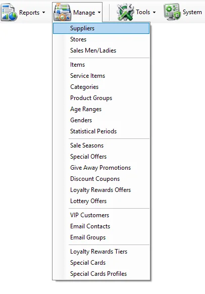
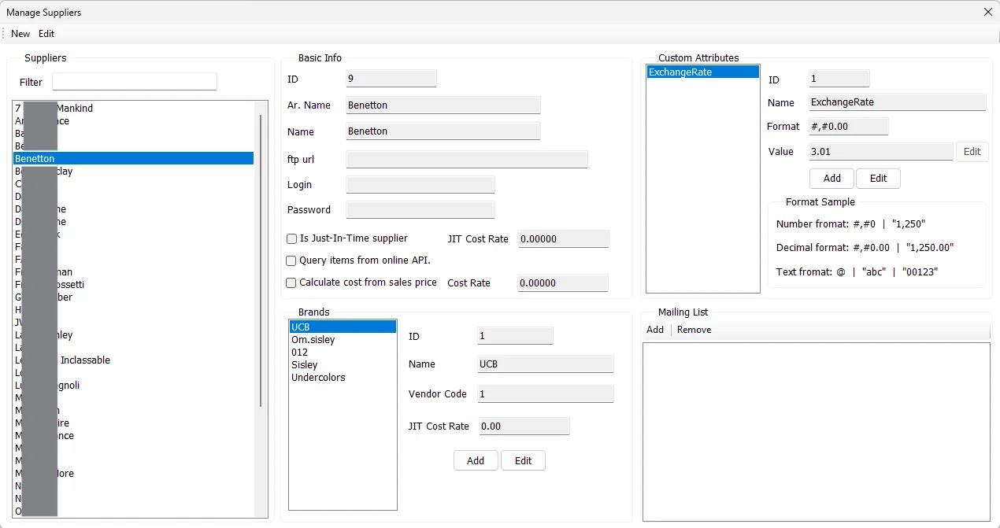

Master data
Add a supplier
Create the supplier ID and name, then add the supplier's brands.
Suppliers maintains the supplier master used by purchasing, item/brand relationships, JIT and costing rules, integration attributes, mailing contacts and, when VAT is enabled, supplier VAT registration information.


The supplier list excludes the internal ID 0 record and is sorted by the supplier's English name.
The supplier ID must be unique and Name is required. If the Arabic name is left blank, IMS uses the Name value when saving the supplier.
| Field | Purpose |
|---|---|
| ID | Unique numeric supplier identifier. The ID is entered when creating a supplier and is read-only afterward. |
| Ar. Name | Arabic supplier name. If omitted during creation or editing, IMS uses the main Name. |
| Name | Main supplier name used by the supplier list and throughout IMS. |
| ftp url | Optional FTP endpoint stored with the supplier for supplier-related integration workflows. |
| Login | Login name stored with the supplier FTP/integration settings. |
| Password | Password stored with the supplier integration settings. It is displayed as a masked field on the form. |
| Is Just-In-Time supplier | Marks the supplier as a JIT supplier and enables the supplier JIT Cost Rate field. |
| JIT Cost Rate | Supplier-level rate used by the IMS JIT workflow. |
| Query items from online API | Marks the supplier so IMS can use the supplier's online-item API workflow where supported. |
| Calculate cost from sales price | Enables the supplier's sales-price-based costing option. |
| Cost Rate | Rate stored for the sales-price-based costing option. |
When VAT is enabled in System → Settings, Suppliers shows a VAT Information section.
| Field | Behavior |
|---|---|
| VAT Registered | Marks the supplier as VAT registered. This flag is used by the Purchase screen when selecting the supplier's default Tax Treatment. |
| VAT Account No. | Supplier VAT registration/account number. It becomes editable when VAT Registered is selected. |
When a supplier is selected in Purchases, IMS loads these values into the Purchase VAT section. See VAT & Tax Configuration.
Brands belong to a supplier. Selecting a supplier loads only the brands assigned to that supplier.
| Brand field | Meaning |
|---|---|
| ID | Brand identifier within the selected supplier. |
| Name | Brand name. IMS prevents duplicate brand names under the same supplier. |
| Vendor Code | Supplier/vendor code stored for the brand. |
| JIT Cost Rate | Brand-specific JIT cost rate. It is available when the supplier is marked as JIT. |
For a JIT supplier, a newly added brand starts with the supplier JIT Cost Rate as its initial value and can then use its own brand-level rate.
Select the brand, click Edit, change the required values and click Save. Click Cancel to leave the existing brand unchanged.
Supplier Custom Attributes let IMS store extra business data that is not part of the standard supplier fields. An attribute definition is global, while the Value is stored separately for each supplier.
| Field | Meaning |
|---|---|
| ID | Global supplier-attribute identifier. |
| Name | Attribute name. Spaces are normalized to underscores when IMS saves the definition. |
| Format | Display format used when the attribute is presented in reports or other supported areas. |
| Value | The selected supplier's value for this attribute. |
The screen provides examples for number, decimal and text formats. Typical examples are #,##0, #,##0.00 and @.
Users with the required global-attribute permission can add and edit supplier attribute definitions. Attribute Name is required and IMS prevents duplicate attribute names.
The Mailing List is available for JIT suppliers and can be associated with the selected brand or with all brands under the supplier. IMS Autos uses these addresses for newly imported online orders: once the Shopify service has created the order in IMS, Autos groups its items by Supplier/Brand and emails the applicable recipients automatically.
IMS prevents the same address from being added twice to the applicable supplier/brand mailing list.
Select the email and click Remove. IMS asks for confirmation. If the address belongs to the supplier-wide all-brands list rather than the selected brand, IMS informs the user before removing the supplier-wide entry.
Supplier and Brand are not merely labels on this screen. They are reporting dimensions used throughout IMS:
Supplier maintenance is controlled by IMS access policy. Users without supplier-management rights can review the screen but cannot perform the protected supplier-maintenance and mailing-list actions. Creating or editing global Supplier Custom Attribute definitions uses a separate global-attributes permission.
Create the supplier ID and name, then add the supplier's brands.
Brands are maintained under their supplier and become available to reporting and merchandise filters.
Enable JIT, set the applicable supplier/brand rates and maintain the mailing list.
Create a Custom Attribute and maintain the value for each supplier that needs it.